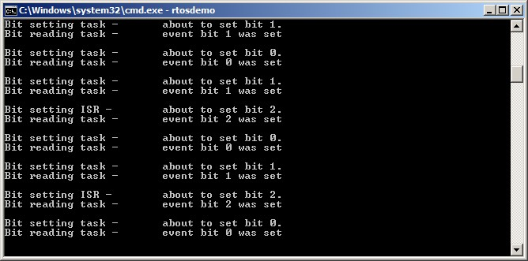
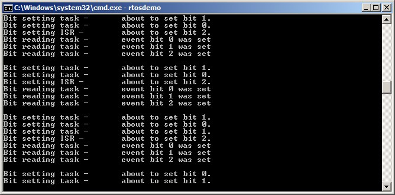

9 Event Groups
9.1 Chapter Introduction and Scope
It has already been noted that real-time embedded systems have to take actions in response to events. Previous chapters have described features of FreeRTOS that allow events to be communicated to tasks. Examples of such features include semaphores and queues, both of which have the following properties:
-
They allow a task to wait in the Blocked state for a single event to occur.
-
They unblock a single task when the event occurs. The task that is unblocked is the highest priority task that was waiting for the event.
Event groups are another feature of FreeRTOS that allow events to be communicated to tasks. Unlike queues and semaphores:
-
Event groups allow a task to wait in the Blocked state for a combination of one of more events to occur.
-
Event groups unblock all the tasks that were waiting for the same event, or combination of events, when the event occurs.
These unique properties of event groups make them useful for synchronizing multiple tasks, broadcasting events to more than one task, allowing a task to wait in the Blocked state for any one of a set of events to occur, and allowing a task to wait in the Blocked state for multiple actions to complete.
Event groups also provide the opportunity to reduce the RAM used by an application as, often, it is possible to replace many binary semaphores with a single event group.
Event group functionality is optional. To include event group functionality, build the FreeRTOS source file event_groups.c as part of your project.
9.1.1 Scope
This chapter aims to give readers a good understanding of:
- Practical uses for event groups.
- The advantages and disadvantages of event groups relative to other FreeRTOS features.
- How to set bits in an event group.
- How to wait in the Blocked state for bits to become set in an event group.
- How to use an event group to synchronize a set of tasks.
9.2 Characteristics of an Event Group
9.2.1 Event Groups, Event Flags and Event Bits
An event 'flag' is a Boolean (1 or 0) value used to indicate if an event has occurred or not. An event 'group' is a set of event flags.
An event flag can only be 1 or 0, allowing the state of an event flag to
be stored in a single bit, and the state of all the event flags in an
event group to be stored in a single variable; the state of each event
flag in an event group is represented by a single bit in a variable of
type EventBits_t. For that reason, event flags are also known as event
'bits'. If a bit is set to 1 in the EventBits_t variable, then the event
represented by that bit has occurred. If a bit is set to 0 in the
EventBits_t variable, then the event represented by that bit has not
occurred.
Figure 9.1 shows how individual event flags are mapped to individual bits
in a variable of type EventBits_t.

Figure 9.1 Event flag to bit number mapping in a variable of type EventBits_t
As an example, if the value of an event group is 0x92 (binary 1001 0010)
then only event bits 1, 4 and 7 are set, so only the events represented
by bits 1, 4 and 7 have occurred. Figure 9.2 shows a variable of type
EventBits_t that has event bits 1, 4 and 7 set, and all the other event
bits clear, giving the event group a value of 0x92.

Figure 9.2 An event group in which only bits 1, 4 and 7 are set, and all the other event flags are clear, making the event group's value 0x92
It is up to the application writer to assign a meaning to individual bits within an event group. For example, the application writer might create an event group, then:
-
Define bit 0 within the event group to mean "a message has been received from the network".
-
Define bit 1 within the event group to mean "a message is ready to be sent onto the network".
-
Define bit 2 within the event group to mean "abort the current network connection".
9.2.2 More About the EventBits_t Data Type
The number of event bits in an event group is dependent on the
configTICK_TYPE_WIDTH_IN_BITS compile time configuration constant in
FreeRTOSConfig.h1:
configTICK_TYPE_WIDTH_IN_BITS configures the type used to hold the RTOS
tick count, so would seem unrelated to the event groups feature. Its
effect on the EventBits_t type is a consequence of FreeRTOS's
internal implementation, and desirable as it is to set configTICK_TYPE_WIDTH_IN_BITS
to TICK_TYPE_WIDTH_16_BITS, this should be done only when FreeRTOS is executing on an
architecture that can handle 16-bit types more efficiently than
32-bit types.
-
If
configTICK_TYPE_WIDTH_IN_BITSisTICK_TYPE_WIDTH_16_BITS, then each event group contains 8 usable event bits. -
If
configTICK_TYPE_WIDTH_IN_BITSisTICK_TYPE_WIDTH_32_BITS, then each event group contains 24 usable event bits. -
If
configTICK_TYPE_WIDTH_IN_BITSisTICK_TYPE_WIDTH_64_BITS, then each event group contains 56 usable event bits.
9.2.3 Access by Multiple Tasks
Event groups are objects in their own right that can be accessed by any task or ISR that knows of their existence. Any number of tasks can set bits in the same event group, and any number of tasks can read bits from the same event group.
9.2.4 A Practical Example of Using an Event Group
The implementation of the FreeRTOS+TCP TCP/IP stack provides a practical example of how an event group can be used to simultaneously simplify a design, and minimize resource usage.
A TCP socket must respond to many different events. Examples of events include accept events, bind events, read events and close events. The events a socket can expect at any given time are dependent on the state of the socket. For example, if a socket has been created, but not yet bound to an address, then it can expect to receive a bind event, but would not expect to receive a read event (it cannot read data if it does not have an address).
The state of a FreeRTOS+TCP socket is held in a structure called
FreeRTOS_Socket_t. The structure contains an event group that has an
event bit defined for each event the socket must process. FreeRTOS+TCP
API calls that block to wait for an event, or group of events, simply
block on the event group.
The event group also contains an 'abort' bit, allowing a TCP connection to be aborted, no matter which event the socket is waiting for at the time.
9.3 Event Management Using Event Groups
9.3.1 The xEventGroupCreate() API Function
FreeRTOS also includes the xEventGroupCreateStatic() function,
which allocates the memory required to create an event group statically
at compile time: An event group must be explicitly created before it can
be used.
Event groups are referenced using variables of type EventGroupHandle_t.
The xEventGroupCreate() API function is used to create an event group,
and returns an EventGroupHandle_t to reference the event group it
creates.
EventGroupHandle_t xEventGroupCreate( void );
Listing 9.1 The xEventGroupCreate() API function prototype
xEventGroupCreate() return value
-
Return Value
If NULL is returned, then the event group cannot be created because there is insufficient heap memory available for FreeRTOS to allocate the event group data structures. Chapter 3 provides more information on heap memory management.
A non-NULL value being returned indicates that the event group has been created successfully. The returned value should be stored as the handle to the created event group.
9.3.2 The xEventGroupSetBits() API Function
The xEventGroupSetBits() API function sets one or more bits in an event
group, and is typically used to notify a task that the events
represented by the bit, or bits, being set has occurred.
Note: Never call
xEventGroupSetBits()from an interrupt service routine. The interrupt-safe versionxEventGroupSetBitsFromISR()should be used in its place.
EventBits_t xEventGroupSetBits( EventGroupHandle_t xEventGroup,
const EventBits_t uxBitsToSet );
Listing 9.2 The xEventGroupSetBits() API function prototype
xEventGroupSetBits() parameters and return value
-
xEventGroupThe handle of the event group in which bits are being set. The event group handle will have been returned from the call to
xEventGroupCreate()used to create the event group. -
uxBitsToSetA bit mask that specifies the event bit, or event bits, to set to 1 in the event group. The value of the event group is updated by bitwise ORing the event group's existing value with the value passed in
uxBitsToSet.As an example, setting
uxBitsToSetto 0x04 (binary 0100) will result in event bit 3 in the event group becoming set (if it was not already set), while leaving all the other event bits in the event group unchanged. -
Return Value
The value of the event group at the time the call to
xEventGroupSetBits()returned. Note that the value returned will not necessarily have the bits specified byuxBitsToSetset, because the bits may have been cleared again by a different task.
9.3.3 The xEventGroupSetBitsFromISR() API Function
xEventGroupSetBitsFromISR() is the interrupt safe version of
xEventGroupSetBits().
Giving a semaphore is a deterministic operation because it is known in advance that giving a semaphore can result in at most one task leaving the Blocked state. When bits are set in an event group it is not known in advance how many tasks will leave the Blocked state, so setting bits in an event group is not a deterministic operation.
The FreeRTOS design and implementation standard does not permit
non-deterministic operations to be performed inside an interrupt service
routine, or when interrupts are disabled. For that reason,
xEventGroupSetBitsFromISR() does not set event bits directly inside the
interrupt service routine, but instead defers the action to the RTOS
daemon task.
BaseType_t xEventGroupSetBitsFromISR( EventGroupHandle_t xEventGroup,
const EventBits_t uxBitsToSet,
BaseType_t *pxHigherPriorityTaskWoken );
Listing 9.3 The xEventGroupSetBitsFromISR() API function prototype
xEventGroupSetBitsFromISR() parameters and return value
-
xEventGroupThe handle of the event group in which bits are being set. The event group handle will have been returned from the call to
xEventGroupCreate()used to create the event group. -
uxBitsToSetA bit mask that specifies the event bit, or event bits, to set to 1 in the event group. The value of the event group is updated by bitwise ORing the event group's existing value with the value passed in
uxBitsToSet.As an example, setting
uxBitsToSetto 0x05 (binary 0101) will result in event bit 2 and event bit 0 in the event group becoming set (if they were not already set), while leaving all the other event bits in the event group unchanged. -
pxHigherPriorityTaskWokenxEventGroupSetBitsFromISR()does not set the event bits directly inside the interrupt service routine, but instead defers the action to the RTOS daemon task by sending a command on the timer command queue. If the daemon task was in the Blocked state to wait for data to become available on the timer command queue, then writing to the timer command queue will cause the daemon task to leave the Blocked state. If the priority of the daemon task is higher than the priority of the currently executing task (the task that was interrupted), then, internally,xEventGroupSetBitsFromISR()will set*pxHigherPriorityTaskWokentopdTRUE.If
xEventGroupSetBitsFromISR()sets this value topdTRUE, then a context switch should be performed before the interrupt is exited. This will ensure that the interrupt returns directly to the daemon task, as the daemon task will be the highest priority Ready state task. -
Return Value
There are two possible return values:
-
pdPASSwill be returned only if data was successfully sent to the timer command queue. -
pdFALSEwill be returned if the 'set bits' command could not be written to the timer command queue because the queue was already full.
-
9.3.4 The xEventGroupWaitBits() API Function
The xEventGroupWaitBits() API function allows a task to read the value
of an event group, and optionally wait in the Blocked state for one or
more event bits in the event group to become set, if the event bits are
not already set.
EventBits_t xEventGroupWaitBits( EventGroupHandle_t xEventGroup,
const EventBits_t uxBitsToWaitFor,
const BaseType_t xClearOnExit,
const BaseType_t xWaitForAllBits,
TickType_t xTicksToWait );
Listing 9.4 The xEventGroupWaitBits() API function prototype
The condition used by the scheduler to determine if a task will enter
the Blocked state, and when a task will leave the Blocked state, is
called the 'unblock condition'. The unblock condition is specified by a
combination of the uxBitsToWaitFor and the xWaitForAllBits parameter
values:
-
uxBitsToWaitForspecifies which event bits in the event group to test -
xWaitForAllBitsspecifies whether to use a bitwise OR test, or a bitwise AND test
A task will not enter the Blocked state if its unblock condition is met
at the time xEventGroupWaitBits() is called.
Examples of conditions that will result in a task either entering the Blocked state, or exiting the Blocked state, are provided in Table 6. Table 6 only shows the least significant four binary bits of the event group and uxBitsToWaitFor values—the other bits of those two values are assumed to be zero.
| Existing Event Group Value | uxBitsToWaitFor value | xWaitForAllBits value | Resultant Behavior |
|---|---|---|---|
| 0000 | 0101 | pdFALSE | The calling task will enter the Blocked state because neither of bit 0 or bit 2 are set in the event group, and will leave the Blocked state when either bit 0 OR bit 2 are set in the event group. |
| 0100 | 0101 | pdTRUE | The calling task will enter the Blocked state because bit 0 and bit 2 are not both set in the event group, and will leave the Blocked state when both bit 0 AND bit 2 are set in the event group. |
| 0100 | 0110 | pdFALSE | The calling task will not enter the Blocked state because xWaitForAllBits is pdFALSE, and one of the two bits specified by uxBitsToWaitFor is already set in the event group. |
| 0100 | 0110 | pdTRUE | The calling task will enter the Blocked state because xWaitForAllBits is pdTRUE, and only one of the two bits specified by uxBitsToWaitFor is already set in the event group. The task will leave the Blocked state when both bit 1 and bit 2 are set in the event group. |
Table 6 The Effect of the uxBitsToWaitFor and xWaitForAllBits Parameters
The calling task specifies bits to test using the uxBitsToWaitFor
parameter, and it is likely the calling task will need to clear these
bits back to zero after its unblock condition has been met. Event bits
can be cleared using the xEventGroupClearBits() API function, but using
that function to manually clear event bits will lead to race conditions
in the application code if:
- There is more than one task using the same event group.
- Bits are set in the event group by a different task, or by an interrupt service routine.
The xClearOnExit parameter is provided to avoid these potential race
conditions. If xClearOnExit is set to pdTRUE, then the testing and
clearing of event bits appears to the calling task to be an atomic
operation (uninterruptable by other tasks or interrupts).
xEventGroupWaitBits() parameters and return value
-
xEventGroupThe handle of the event group that contains the event bits being read. The event group handle will have been returned from the call to
xEventGroupCreate()used to create the event group. -
uxBitsToWaitForA bit mask that specifies the event bit, or event bits, to test in the event group.
For example, if the calling task wants to wait for event bit 0 and/or event bit 2 to become set in the event group, then set
uxBitsToWaitForto 0x05 (binary 0101). Refer to Table 6 for further examples. -
xClearOnExitIf the calling task's unblock condition has been met, and
xClearOnExitis set topdTRUE, then the event bits specified byuxBitsToWaitForwill be cleared back to 0 in the event group before the calling task exits thexEventGroupWaitBits()API function.If
xClearOnExitis set topdFALSE, then the state of the event bits in the event group are not modified by thexEventGroupWaitBits()API function. -
xWaitForAllBitsThe
uxBitsToWaitForparameter specifies the event bits to test in the event group.xWaitForAllBitsspecifies if the calling task should be removed from the Blocked state when one or more of the events bits specified by theuxBitsToWaitForparameter are set, or only when all of the event bits specified by theuxBitsToWaitForparameter are set.If
xWaitForAllBitsis set topdFALSE, then a task that entered the Blocked state to wait for its unblock condition to be met will leave the Blocked state when any of the bits specified byuxBitsToWaitForbecome set (or the timeout specified by thexTicksToWaitparameter expires).If
xWaitForAllBitsis set topdTRUE, then a task that entered the Blocked state to wait for its unblock condition to be met will only leave the Blocked state when all of the bits specified byuxBitsToWaitForare set (or the timeout specified by thexTicksToWaitparameter expires).Refer to Table 6 for examples.
-
xTicksToWaitThe maximum amount of time the task should remain in the Blocked state to wait for its unblock condition to be met.
xEventGroupWaitBits()will return immediately ifxTicksToWaitis zero, or the unblock condition is met at the timexEventGroupWaitBits()is called.The block time is specified in tick periods, so the absolute time it represents is dependent on the tick frequency. The macro
pdMS_TO_TICKS()can be used to convert a time specified in milliseconds into a time specified in ticks.Setting
xTicksToWaittoportMAX_DELAYwill cause the task to wait indefinitely (without timing out), providedINCLUDE_vTaskSuspendis set to 1 in FreeRTOSConfig.h. -
Returned Value
If
xEventGroupWaitBits()returned because the calling task's unblock condition was met, then the returned value is the value of the event group at the time the calling task's unblock condition was met (before any bits were automatically cleared ifxClearOnExitwaspdTRUE). In this case the returned value will also meet the unblock condition.If
xEventGroupWaitBits()returned because the block time specified by thexTicksToWaitparameter expired, then the returned value is the value of the event group at the time the block time expired. In this case the returned value will not meet the unblock condition.
9.3.5 The xEventGroupGetStaticBuffer() API Function
The xEventGroupGetStaticBuffer() API function provides a method to retrieve a pointer
to a buffer of a statically created event group. It is the same buffer that is supplied
at the time of creation of the event group.
*Note: Never call xEventGroupGetStaticBuffer() from an interrupt service
routine.
BaseType_t xEventGroupGetStaticBuffer( EventGroupHandle_t xEventGroup,
StaticEventGroup_t ** ppxEventGroupBuffer );
Listing 9.5 The xEventGroupGetStaticBuffer() API function prototype
xEventGroupGetStaticBuffer() parameters and return value
-
xEventGroupThe event group for which to retrieve the buffer. This event group must be created by
xEventGroupCreateStatic(). -
ppxEventGroupBufferUsed to return a pointer to the event groups's data structure buffer. It is the same buffer that is supplied at the time of creation.
-
Return Value
There are two possible return values:
-
pdTRUEwill be returned if the buffer was successfully retrieved. -
pdFALSEwill be returned if the buffer was not successfully retrieved.
-
Example 9.1 Experimenting with event groups
This example demonstrates how to:
- Create an event group.
- Set bits in an event group from an interrupt service routine.
- Set bits in an event group from a task.
- Block on an event group.
The effect of the xEventGroupWaitBits() xWaitForAllBits parameter is
demonstrated by first executing the example with xWaitForAllBits set to
pdFALSE, and then executing the example with xWaitForAllBits set to
pdTRUE.
Event bit 0 and event bit 1 are set from a task. Event bit 2 is set from an interrupt service routine. These three bits are given descriptive names using the #define statements shown in Listing 9.6.
/* Definitions for the event bits in the event group. */
#define mainFIRST_TASK_BIT ( 1UL << 0UL ) /* Event bit 0, set by a task */
#define mainSECOND_TASK_BIT ( 1UL << 1UL ) /* Event bit 1, set by a task */
#define mainISR_BIT ( 1UL << 2UL ) /* Event bit 2, set by an ISR */
Listing 9.6 Event bit definitions used in Example 9.1
Listing 9.7 shows the implementation of the task that sets event bit 0
and event bit 1. It sits in a loop, repeatedly setting one bit, then the
other, with a delay of 200 milliseconds between each call to
xEventGroupSetBits(). A string is printed out before each bit is set to
allow the sequence of execution to be seen in the console.
static void vEventBitSettingTask( void *pvParameters )
{
const TickType_t xDelay200ms = pdMS_TO_TICKS( 200UL ), xDontBlock = 0;
for( ;; )
{
/* Delay for a short while before starting the next loop. */
vTaskDelay( xDelay200ms );
/* Print out a message to say event bit 0 is about to be set by the
task, then set event bit 0. */
vPrintString( "Bit setting task -\t about to set bit 0.\r\n" );
xEventGroupSetBits( xEventGroup, mainFIRST_TASK_BIT );
/* Delay for a short while before setting the other bit. */
vTaskDelay( xDelay200ms );
/* Print out a message to say event bit 1 is about to be set by the
task, then set event bit 1. */
vPrintString( "Bit setting task -\t about to set bit 1.\r\n" );
xEventGroupSetBits( xEventGroup, mainSECOND_TASK_BIT );
}
}
Listing 9.7 The task that sets two bits in the event group in Example 9.1
Listing 9.8 shows the implementation of the interrupt service routine
that sets bit 2 in the event group. Again, a string is printed out
before the bit is set to allow the sequence of execution to be seen in
the console. In this case however, because console output should not be
performed directly in an interrupt service routine,
xTimerPendFunctionCallFromISR() is used to perform the output in the
context of the RTOS daemon task.
As in previous examples, the interrupt service routine is triggered by a simple periodic task that forces a software interrupt. In this example, the interrupt is generated every 500 milliseconds.
static uint32_t ulEventBitSettingISR( void )
{
/* The string is not printed within the interrupt service routine, but is
instead sent to the RTOS daemon task for printing. It is therefore
declared static to ensure the compiler does not allocate the string on
the stack of the ISR, as the ISR's stack frame will not exist when the
string is printed from the daemon task. */
static const char *pcString = "Bit setting ISR -\t about to set bit 2.\r\n";
BaseType_t xHigherPriorityTaskWoken = pdFALSE;
/* Print out a message to say bit 2 is about to be set. Messages cannot
be printed from an ISR, so defer the actual output to the RTOS daemon
task by pending a function call to run in the context of the RTOS
daemon task. */
xTimerPendFunctionCallFromISR( vPrintStringFromDaemonTask,
( void * ) pcString,
0,
&xHigherPriorityTaskWoken );
/* Set bit 2 in the event group. */
xEventGroupSetBitsFromISR( xEventGroup,
mainISR_BIT,
&xHigherPriorityTaskWoken );
/* xTimerPendFunctionCallFromISR() and xEventGroupSetBitsFromISR() both
write to the timer command queue, and both used the same
xHigherPriorityTaskWoken variable. If writing to the timer command
queue resulted in the RTOS daemon task leaving the Blocked state, and
if the priority of the RTOS daemon task is higher than the priority of
the currently executing task (the task this interrupt interrupted) then
xHigherPriorityTaskWoken will have been set to pdTRUE.
xHigherPriorityTaskWoken is used as the parameter to
portYIELD_FROM_ISR(). If xHigherPriorityTaskWoken equals pdTRUE, then
calling portYIELD_FROM_ISR() will request a context switch. If
xHigherPriorityTaskWoken is still pdFALSE, then calling
portYIELD_FROM_ISR() will have no effect.
The implementation of portYIELD_FROM_ISR() used by the Windows port
includes a return statement, which is why this function does not
explicitly return a value. */
portYIELD_FROM_ISR( xHigherPriorityTaskWoken );
}
Listing 9.8 The ISR that sets bit 2 in the event group in Example 9.1
Listing 9.9 shows the implementation of the task that calls
xEventGroupWaitBits() to block on the event group. The task prints out a
string for each bit that is set in the event group.
The xEventGroupWaitBits() xClearOnExit parameter is set to pdTRUE, so
the event bit, or bits, that caused the call to xEventGroupWaitBits() to
return will be cleared automatically before xEventGroupWaitBits()
returns.
static void vEventBitReadingTask( void *pvParameters )
{
EventBits_t xEventGroupValue;
const EventBits_t xBitsToWaitFor = ( mainFIRST_TASK_BIT |
mainSECOND_TASK_BIT |
mainISR_BIT );
for( ;; )
{
/* Block to wait for event bits to become set within the event
group. */
xEventGroupValue = xEventGroupWaitBits( /* The event group to read */
xEventGroup,
/* Bits to test */
xBitsToWaitFor,
/* Clear bits on exit if the
unblock condition is met */
pdTRUE,
/* Don't wait for all bits. This
parameter is set to pdTRUE for the
second execution. */
pdFALSE,
/* Don't time out. */
portMAX_DELAY );
/* Print a message for each bit that was set. */
if( ( xEventGroupValue & mainFIRST_TASK_BIT ) != 0 )
{
vPrintString( "Bit reading task -\t Event bit 0 was set\r\n" );
}
if( ( xEventGroupValue & mainSECOND_TASK_BIT ) != 0 )
{
vPrintString( "Bit reading task -\t Event bit 1 was set\r\n" );
}
if( ( xEventGroupValue & mainISR_BIT ) != 0 )
{
vPrintString( "Bit reading task -\t Event bit 2 was set\r\n" );
}
}
}
Listing 9.9 The task that blocks to wait for event bits to become set in Example 9.1
The main() function creates the event group, and the tasks, before
starting the scheduler. See Listing 9.10 for its implementation. The
priority of the task that reads from the event group is higher than the
priority of the task that writes to the event group, ensuring the
reading task will pre-empt the writing task each time the reading task's
unblock condition is met.
int main( void )
{
/* Before an event group can be used it must first be created. */
xEventGroup = xEventGroupCreate();
/* Create the task that sets event bits in the event group. */
xTaskCreate( vEventBitSettingTask, "Bit Setter", 1000, NULL, 1, NULL );
/* Create the task that waits for event bits to get set in the event
group. */
xTaskCreate( vEventBitReadingTask, "Bit Reader", 1000, NULL, 2, NULL );
/* Create the task that is used to periodically generate a software
interrupt. */
xTaskCreate( vInterruptGenerator, "Int Gen", 1000, NULL, 3, NULL );
/* Install the handler for the software interrupt. The syntax necessary
to do this is dependent on the FreeRTOS port being used. The syntax
shown here can only be used with the FreeRTOS Windows port, where such
interrupts are only simulated. */
vPortSetInterruptHandler( mainINTERRUPT_NUMBER, ulEventBitSettingISR );
/* Start the scheduler so the created tasks start executing. */
vTaskStartScheduler();
/* The following line should never be reached. */
for( ;; );
return 0;
}
Listing 9.10 Creating the event group and tasks in Example 9.1
The output produced when Example 9.1 is executed with the
xEventGroupWaitBits() xWaitForAllBits parameter set to pdFALSE is shown
in Figure 9.3. In Figure 9.3, it can be seen that, because the
xWaitForAllBits parameter in the call to xEventGroupWaitBits() was set
to pdFALSE, the task that reads from the event group leaves the Blocked
state and executes immediately every time any of the event bits are set.

Figure 9.3 The output produced when Example 9.1 is executed with xWaitForAllBits set to pdFALSE
The output produced when Example 9.1 is executed with the
xEventGroupWaitBits() xWaitForAllBits parameter set to pdTRUE is shown
in Figure 9.4. In Figure 9.4 it can be seen that, because the
xWaitForAllBits parameter was set to pdTRUE, the task that reads from
the event group only leaves the Blocked state after all three of the
event bits are set.

Figure 9.4 The output produced when Example 9.1 is executed with xWaitForAllBits set to pdTRUE
9.4 Task Synchronization Using an Event Group
Sometimes the design of an application requires two or more tasks to synchronize with each other. For example, consider a design where Task A receives an event, then delegates some of the processing necessitated by the event to three other tasks: Task B, Task C and Task D. If Task A cannot receive another event until tasks B, C and D have all completed processing the previous event, then all four tasks will need to synchronize with each other. Each task's synchronization point will be after that task has completed its processing, and cannot proceed further until each of the other tasks have done the same. Task A can only receive another event after all four tasks have reached their synchronization point.
A less abstract example of the need for this type of task synchronization is found in one of the FreeRTOS+TCP demonstration projects. The demonstration shares a TCP socket between two tasks; one task sends data to the socket, and a different task receives data from the same socket2. It is not safe for either task to close the TCP socket until it is sure the other task will not attempt to access the socket again. If either of the two tasks wishes to close the socket, then it must inform the other task of its intent, and then wait for the other task to stop using the socket before proceeding. The scenario where it is the task that sends data to the socket that wishes to close the socket is demonstrated by the pseudo code shown in Listing 9.10.
At the time of writing, this is the only way a single FreeRTOS+TCP socket can be shared between tasks.
The scenario demonstrated by Listing 9.10 is trivial, as there are only two tasks that need to synchronize with each other, but it is easy to see how the scenario would become more complex, and require more tasks to join the synchronization, if other tasks were performing processing that was dependent on the socket being open.
void SocketTxTask( void *pvParameters )
{
xSocket_t xSocket;
uint32_t ulTxCount = 0UL;
for( ;; )
{
/* Create a new socket. This task will send to this socket, and another
task will receive from this socket. */
xSocket = FreeRTOS_socket( ... );
/* Connect the socket. */
FreeRTOS_connect( xSocket, ... );
/* Use a queue to send the socket to the task that receives data. */
xQueueSend( xSocketPassingQueue, &xSocket, portMAX_DELAY );
/* Send 1000 messages to the socket before closing the socket. */
for( ulTxCount = 0; ulTxCount < 1000; ulTxCount++ )
{
if( FreeRTOS_send( xSocket, ... ) < 0 )
{
/* Unexpected error - exit the loop, after which the socket
will be closed. */
break;
}
}
/* Let the Rx task know the Tx task wants to close the socket. */
TxTaskWantsToCloseSocket();
/* This is the Tx task's synchronization point. The Tx task waits here
for the Rx task to reach its synchronization point. The Rx task will
only reach its synchronization point when it is no longer using the
socket, and the socket can be closed safely. */
xEventGroupSync( ... );
/* Neither task is using the socket. Shut down the connection, then
close the socket. */
FreeRTOS_shutdown( xSocket, ... );
WaitForSocketToDisconnect();
FreeRTOS_closesocket( xSocket );
}
}
/*-----------------------------------------------------------*/
void SocketRxTask( void *pvParameters )
{
xSocket_t xSocket;
for( ;; )
{
/* Wait to receive a socket that was created and connected by the Tx
task. */
xQueueReceive( xSocketPassingQueue, &xSocket, portMAX_DELAY );
/* Keep receiving from the socket until the Tx task wants to close the
socket. */
while( TxTaskWantsToCloseSocket() == pdFALSE )
{
/* Receive then process data. */
FreeRTOS_recv( xSocket, ... );
ProcessReceivedData();
}
/* This is the Rx task's synchronization point - it only reaches here
when it is no longer using the socket, and it is therefore safe for
the Tx task to close the socket. */
xEventGroupSync( ... );
}
}
Listing 9.11 Pseudo code for two tasks that synchronize with each other to ensure a shared TCP socket is no longer in use by either task before the socket is closed
An event group can be used to create a synchronization point:
-
Each task that must participate in the synchronization is assigned a unique event bit within the event group.
-
Each task sets its own event bit when it reaches the synchronization point.
-
Having set its own event bit, each task blocks on the event group to wait for the event bits that represent all the other synchronizing tasks to also become set.
However, the xEventGroupSetBits() and xEventGroupWaitBits() API
functions cannot be used in this scenario. If they were used, then the
setting of a bit (to indicate a task had reached its synchronization
point) and the testing of bits (to determine if the other synchronizing
tasks had reached their synchronization point) would be performed as two
separate operations. To see why that would be a problem, consider a
scenario where Task A, Task B and Task C attempt to synchronize using an
event group:
-
Task A and Task B have already reached the synchronization point, so their event bits are set in the event group, and they are in the Blocked state to wait for task C's event bit to also become set.
-
Task C reaches the synchronization point, and uses
xEventGroupSetBits()to set its bit in the event group. As soon as Task C's bit is set, Task A and Task B leave the Blocked state, and clear all three event bits. -
Task C then calls
xEventGroupWaitBits()to wait for all three event bits to become set, but by that time, all three event bits have already been cleared, Task A and Task B have left their respective synchronization points, and so the synchronization has failed.
To successfully use an event group to create a synchronization point,
the setting of an event bit, and the subsequent testing of event bits,
must be performed as a single uninterruptable operation. The
xEventGroupSync() API function is provided for that purpose.
9.4.1 The xEventGroupSync() API Function
xEventGroupSync() is provided to allow two or more tasks to use an event
group to synchronize with each other. The function allows a task to set
one or more event bits in an event group, then wait for a combination of
event bits to become set in the same event group, as a single
uninterruptable operation.
The xEventGroupSync() uxBitsToWaitFor parameter specifies the calling
task's unblock condition. The event bits specified by uxBitsToWaitFor
will be cleared back to zero before xEventGroupSync() returns, if
xEventGroupSync() returned because the unblock condition had been met.
EventBits_t xEventGroupSync( EventGroupHandle_t xEventGroup,
const EventBits_t uxBitsToSet,
const EventBits_t uxBitsToWaitFor,
TickType_t xTicksToWait );
Listing 9.12 The xEventGroupSync() API function prototype
xEventGroupSync() parameters and return value
-
xEventGroupThe handle of the event group in which event bits are to be set, and then tested. The event group handle will have been returned from the call to
xEventGroupCreate()used to create the event group. -
uxBitsToSetA bit mask that specifies the event bit, or event bits, to set to 1 in the event group. The value of the event group is updated by bitwise ORing the event group's existing value with the value passed in
uxBitsToSet.As an example, setting
uxBitsToSetto 0x04 (binary 0100) will result in event bit 2 becoming set (if it was not already set), while leaving all the other event bits in the event group unchanged. -
uxBitsToWaitForA bit mask that specifies the event bit, or event bits, to test in the event group.
For example, if the calling task wants to wait for event bits 0, 1 and 2 to become set in the event group, then set
uxBitsToWaitForto 0x07 (binary 111). -
xTicksToWaitThe maximum amount of time the task should remain in the Blocked state to wait for its unblock condition to be met.
xEventGroupSync()will return immediately ifxTicksToWaitis zero, or the unblock condition is met at the timexEventGroupSync()is called.The block time is specified in tick periods, so the absolute time it represents is dependent on the tick frequency. The macro
pdMS_TO_TICKS()can be used to convert a time specified in milliseconds into a time specified in ticks.Setting
xTicksToWaittoportMAX_DELAYwill cause the task to wait indefinitely (without timing out), providedINCLUDE_vTaskSuspendis set to 1 in FreeRTOSConfig.h. -
Returned Value
If
xEventGroupSync()returned because the calling task's unblock condition was met, then the returned value is the value of the event group at the time the calling task's unblock condition was met (before any bits were automatically cleared back to zero). In this case the returned value will also meet the calling task's unblock condition.If
xEventGroupSync()returned because the block time specified by thexTicksToWaitparameter expired, then the returned value is the value of the event group at the time the block time expired. In this case the returned value will not meet the calling task's unblock condition.
Example 9.2 Synchronizing tasks
Example 9.2 uses xEventGroupSync() to synchronize three instances of a
single task implementation. The task parameter is used to pass into each
instance the event bit the task will set when it calls
xEventGroupSync().
The task prints a message before calling xEventGroupSync(), and again
after the call to xEventGroupSync() has returned. Each message includes
a time stamp. This allows the sequence of execution to be observed in
the output produced. A pseudo random delay is used to prevent all the
tasks reaching the synchronization point at the same time.
See Listing 9.12 for the task's implementation.
static void vSyncingTask( void *pvParameters )
{
const TickType_t xMaxDelay = pdMS_TO_TICKS( 4000UL );
const TickType_t xMinDelay = pdMS_TO_TICKS( 200UL );
TickType_t xDelayTime;
EventBits_t uxThisTasksSyncBit;
const EventBits_t uxAllSyncBits = ( mainFIRST_TASK_BIT |
mainSECOND_TASK_BIT |
mainTHIRD_TASK_BIT );
/* Three instances of this task are created - each task uses a different
event bit in the synchronization. The event bit to use is passed into
each task instance using the task parameter. Store it in the
uxThisTasksSyncBit variable. */
uxThisTasksSyncBit = ( EventBits_t ) pvParameters;
for( ;; )
{
/* Simulate this task taking some time to perform an action by delaying
for a pseudo random time. This prevents all three instances of this
task reaching the synchronization point at the same time, and so
allows the example's behavior to be observed more easily. */
xDelayTime = ( rand() % xMaxDelay ) + xMinDelay;
vTaskDelay( xDelayTime );
/* Print out a message to show this task has reached its synchronization
point. pcTaskGetTaskName() is an API function that returns the name
assigned to the task when the task was created. */
vPrintTwoStrings( pcTaskGetTaskName( NULL ), "reached sync point" );
/* Wait for all the tasks to have reached their respective
synchronization points. */
xEventGroupSync( /* The event group used to synchronize. */
xEventGroup,
/* The bit set by this task to indicate it has reached
the synchronization point. */
uxThisTasksSyncBit,
/* The bits to wait for, one bit for each task taking
part in the synchronization. */
uxAllSyncBits,
/* Wait indefinitely for all three tasks to reach the
synchronization point. */
portMAX_DELAY );
/* Print out a message to show this task has passed its synchronization
point. As an indefinite delay was used the following line will only
be executed after all the tasks reached their respective
synchronization points. */
vPrintTwoStrings( pcTaskGetTaskName( NULL ), "exited sync point" );
}
}
Listing 9.13 The implementation of the task used in Example 9.2
The main() function creates the event group, creates all three tasks,
and then starts the scheduler. See Listing 9.14 for its implementation.
/* Definitions for the event bits in the event group. */
#define mainFIRST_TASK_BIT ( 1UL << 0UL ) /* Event bit 0, set by the 1st task */
#define mainSECOND_TASK_BIT( 1UL << 1UL ) /* Event bit 1, set by the 2nd task */
#define mainTHIRD_TASK_BIT ( 1UL << 2UL ) /* Event bit 2, set by the 3rd task */
/* Declare the event group used to synchronize the three tasks. */
EventGroupHandle_t xEventGroup;
int main( void )
{
/* Before an event group can be used it must first be created. */
xEventGroup = xEventGroupCreate();
/* Create three instances of the task. Each task is given a different
name, which is later printed out to give a visual indication of which
task is executing. The event bit to use when the task reaches its
synchronization point is passed into the task using the task parameter. */
xTaskCreate( vSyncingTask, "Task 1", 1000, mainFIRST_TASK_BIT, 1, NULL );
xTaskCreate( vSyncingTask, "Task 2", 1000, mainSECOND_TASK_BIT, 1, NULL );
xTaskCreate( vSyncingTask, "Task 3", 1000, mainTHIRD_TASK_BIT, 1, NULL );
/* Start the scheduler so the created tasks start executing. */
vTaskStartScheduler();
/* As always, the following line should never be reached. */
for( ;; );
return 0;
}
Listing 9.14 The main() function used in Example 9.2
The output produced when Example 9.2 is executed is shown in Figure 9.5. It can be seen that, even though each task reaches the synchronization point at a different (pseudo random) time, each task exits the synchronization point at the same time3 (which is the time at which the last task reached the synchronization point).
Figure 9.5 shows the example running in the FreeRTOS Windows port, which does not provide true real time behavior (especially when using Windows system calls to print to the console), and will therefore show some timing variation.

Figure 9.5 The output produced when Example 9.2 is executed